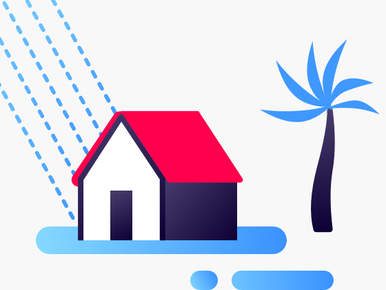

Teletracking is currently expanding into the broader area of community health solutions. To that end, they tasked us with investigating and finding a solution that could benefit both hospitals and citizens at large during disasters.
From our initial research, we discovered that there is a large surge of non-patients seeking shelter at hospitals, especially during hurricanes. Many of these people are citizens with special medical needs: i.e. they have a condition that requires a specific healthcare intervention such as a specialized services, and/or a medical device. Our solution seeks to address this community and their caretakers while also indirectly aiding hospitals during disasters, as reflected in our design goals.
Design Goals
• Encourage preparation before the disaster.
• Find the most appropriate place to shelter.
• Adapt instructions based on changing conditions.
• Provide hospitals with relevant data.
Haven

The core of our solution is Haven, a mobile application. Haven helps people prepare for when a disaster strikes and deal with it while it's happening. It includes preparation tools, shelter registration, and evacuation routes. Haven helps to alleviate congestion in hospitals during disasters by addressing these issues head-on and providing hospitals with valuable data during these times of crisis. Aside from the mobile app, we have developed a service plan outlining how Haven and its data can be best integrated into broader systems, as well as a road map with future areas of expansion.